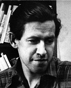
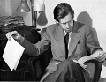
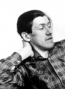

Frans Birger Eugén Vikström
Skogsarbetare, författare. Blev 37 år.
| Född: | 1921-09-24 Bredåker, Överluleå fs, Bodens sn. [1] |
|---|
| Död: | 1958-12-22 Skarpnäcks fs, Stockholms stad. [2] |
|---|
Noteringar
Birger Vikström, född 1921 i Bredåker, Överluelå fs och avled den 22 december 1958 av TBC på ett litet hotell (Saga) i Klarakvarteren, Stockholm. När han var fyra år flyttade familjen till Granbergsträsk. Jörns sn i Västerbotten. Några år efter flytten drabbades fadern av en blindtarms- och maghinneinflammation och dog. Modern blev ensam med fem barn, Birger Vikström växte upp i Granbergsträsk, Jörns sn på 1930-talet innan hans vandringar förde honom till ett liv som författare under en tid bland Klarabohemerna i Stockholm. Dessförinnan var han skogsarbetare. Elev på Brunnsvik 1945-46. Birger Vikström har beskrivits som rastlös och som drabbades av sjukdom och alkoholism. Han blev endast 37 år gammal men fick under sitt korta liv åtta böcker utgivna och ytterligare sju har utkommit postumt, varav två nyutgåva.
Vikström debuterade med novellsamlingen Gyllene tider 1948.
Ur hans nästa bok "Att vara dräng" kan vi läsa:
"Jag är ingen jätte och ingen dvärg utan ungefär av medellängd. Axlarna är framskjutna vilket gör att jag på något sätt verkar hopsjunken när jag går. Händerna hamnar som oftast i byxfickorna och stannar där nöjda med värme och vila. När jag är i en stad alltså och någonstans måste göra av händerna. Jag har svart hår och ett smalt ansikte som är alldagligt och föga skönt.
För övrigt har jag under mitt kringflackande levat så enahanda att det knappast är värt att nämna ens en episod. Jag är en arbetare utan yrke och det är inte många som frågar efter var jag håller hus eller vad jag gör. "
Hans texter präglas av humor, allvar och ironi vilket särskilt märks i Den svenska människan (utgiven 1959), vilken han illustrerat med egna teckningar. Han räknas som en av ett fåtal framstående satiriker i svensk litteratur.
Romanen ”De lyckliga åren” är en varm skildring av hembygden, hans uppväxt och den hårda tillvaro som hans mor hade.
Bibliografi
Gyllene tider 1948
Att vara dräng 1949
I stället för rakblad 1950
Staden 1950
Egna historier 1953
De lyckliga åren 1954
Dubbelkrut (och hans pirater) eller det ödesdigra djungelkriget 1956
13 historier 1958
Den svenska människan 1959
Bilder 1975
I sällskap med Birger Vikström 1980
En underlig roman och andra berättelser 2001
De lyckliga åren (Nyutgåva) 2010
Dubbelkrut (Nyutgåva) 2010
Mitt namn är Birger Vikström. Så enkelt är mitt elände! 2011
Priser och utmärkelser
Svenska Dagbladets litteraturpris 1954 tillsammans med Lise Drougge och Folke Isaksson.
Tidningen VI:s litteraturpris 1957
Extern länk:
Birger Vikström i Libris 2012-08-18
libris.kb.se/hitlist.jsp?q=f%C3%B6rf%3A%28Vikstr%C3%B6m%2C+Birger%2C+1921-1958%29
Personhistoria
| Årtal | Ålder | Händelse |
|---|
| 1921 |
|
Födelse 1921-09-24 Bredåker, Överluleå fs, Bodens sn [1] |
| 1926 |
4 år |
Fadern Erik Konrad Vikström dör 1926-09-22 Granbergsträsk, Jörns fs, Jörns sn [3] |
| 1937 |
15 år |
Modern Eva Johanna Andersson dör 1937-01-25 Granbergsträsk, Jörns fs, Jörns sn |
| 1958 |
37 år |
Död 1958-12-22 Skarpnäcks fs, Stockholms stad [2] |
Dokument
Källor
| [1] | Piteå lfs CI:21 (1915-1922) 294/1921 fol. 389, SCB Födda BD Piteå lfs 294/1921 |
| |
| | |
| [2] | DB / DOR 52-60 |
| |
| | |
| [3] | Jörn F:3 (1914-1931) 50/1926 fol. 108, AIIA:8 (1926-1934) fol. 608 |
| |
|
 |
Berger Vikström, Författare
Född i Klubbors, Piteå sn, men växte upp i en by i Västerbotten, Granbergsträsk, utanför Jörn där han i ungdomsåren arbetade som skogshuggare och jordbruksarbetare. Tillhörde en tid de så kallade Klarabohemerna. Gav under sin levnadstid ut åtta böcker, varav en på helt egen hand ¿ Dubbelkrut (och hans pirater).
År 2010 återutgav av Black Island Books Dubbelkrut, då med hittills inte publicerade färgillustrationer
Nu kommer samlingen Mitt namn är Birger Vikström. Så enkelt är mitt elände! Den innehåller hittills opublicerade texter samt artiklar och noveller från tidskrifter och tidningar.
Red: Peo Rask.
Länk:
www.blackisland.se/forfattare/birger-wikstrom-1921-1958
|
| |
|  |
Birger Vikström, Författare
Utställningen visas i den f.d. skola där författaren
fullgjorde sin skolgång, numera Byagård i Granbergsträsk, 10 km från Jörn
Källa: www.nasaleden.com/BV-broschyr%20webb.htm
|
| |
|  |
Birger Vikström, Författare
Fotograf: okänd
Albert Bonniers förlag: ett familjeföretag 1837-1962 : etthundratjugofem år, Bonnier, Stockholm, 1962
|
| |
|  |
Birger Vikström, Författare från Granbergsträsk.
Uppskattade inte julafton, då det påminde honom för mycket om ensamheten på sanatorierna i hans barndom.
Källa: NV Fredag 23 December 2005
|
|

{kind=link}
{kind=link}
{kind=link}